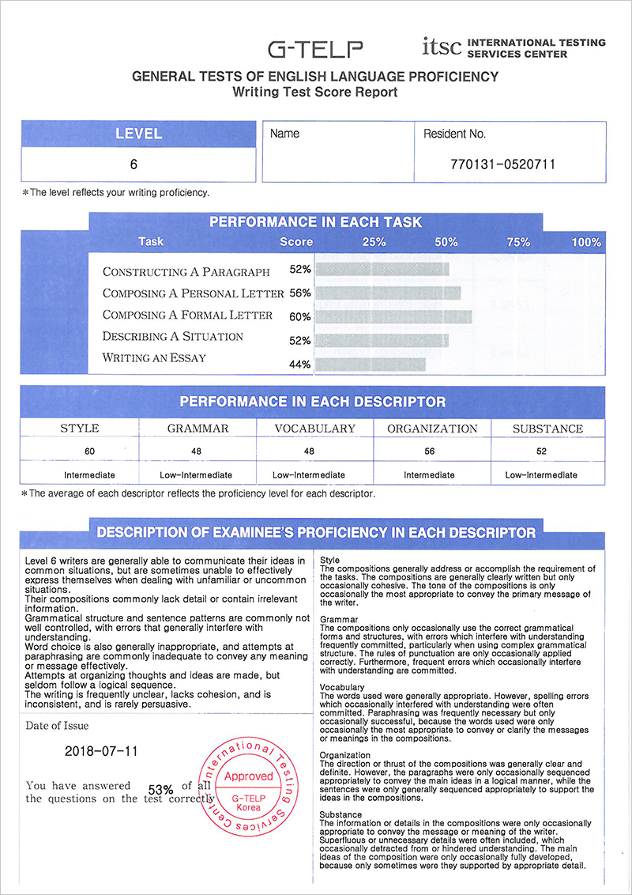

Home > Our Products > English Assessments > Writing Test
G-TELP Writing Test
The G-TELP Writing Test is a Measure of General English Language Writing Proficiency
Take a Demo
Register
The G-TELP Writing Test is designed to assess the general English writing proficiency of non-native English speakers, developed by the International Testing Services Center (ITSC) which consists of evaluation experts.
| Test Type | Simulated Writing Proficiency Test |
|---|---|
| Duration | 60 minutes |
| Availability of Score Report | 7 working days |
| Question | 5 questions corresponding to 5 parts |
| Level | Levels 1 to 11 |
| Descriptor | Grammar, Vocabulary, Organization, Style, Substance |
| Duration of Score Validity | Two (2) years |
With the globalization of business and liberalization of foreign travel, there is a fast-growing and compelling need for non-native English speakers to write better English for their day-to-day interactions. They need to enhance their English-language writing skills to effectively communicate not only with their English-speaking peers in their country but also with both native English speakers and non-native English speakers in various parts of the world. This need has become even more acute with the growing use of the Internet, where English is internationally accepted as the language for communicating information, ideas, thoughts, and feelings.Electronic mail and chat rooms have intensified this communication exchange at even greater speeds, and in ways that demand clear and immediate responses.
There is therefore a need for a formally administered test that can measure the level of a non-native speaker's practical English-writing effectiveness, and whose results can serve as a progressive basis for improvement.
ITSC created the G-TELP Writing Test to evaluate non-native English writers' ability to use written English in everyday situations. This assessment can help non-native speakers improve their English writing skills and build their confidence.
The G-TELP Writing Test complements the General Tests of Language Proficiency (G-TELP™) in assessing the English proficiency of non-native English speakers. Together, these tests form a powerful battery of measuring tools that can help people achieve higher levels of proficiency in the English language.
There is therefore a need for a formally administered test that can measure the level of a non-native speaker's practical English-writing effectiveness, and whose results can serve as a progressive basis for improvement.
ITSC created the G-TELP Writing Test to evaluate non-native English writers' ability to use written English in everyday situations. This assessment can help non-native speakers improve their English writing skills and build their confidence.
The G-TELP Writing Test complements the General Tests of Language Proficiency (G-TELP™) in assessing the English proficiency of non-native English speakers. Together, these tests form a powerful battery of measuring tools that can help people achieve higher levels of proficiency in the English language.
Format
| Part | Task | Response Time (sec) |
|---|---|---|
| Part 1 | Constructing a Paragraph | 6 |
| Part 2 | Composing a Personal Letter | 12 |
| Part 3 | Composing a Formal Letter | 12 |
| Part 4 | Describing a Situation | 14 |
| Part 5 | Writing an Essay | 16 |
The G-TELP Writing Test assesses the facility and proficiency of non-native English speakers in communicating in written English.
It is a highly useful writing test in that:
- It closely approximates a measure of communicative competence in writing because it simulates real-world situations.
- It is a measure of general English language writing proficiency, rather than being specifically geared to academic or business contexts (e.g., for academic study in institutions of higher education in North America).
- Its criteria are derived from experience regarding the acquisition of English language writing skills by non-native speakers, regardless of any particular cultural context or specific testing purpose.
Users of the Writing Test
The G-TELP Writing Test can be used by the following:
- students of all schools, colleges, universities and technical schools
- students expecting to attend schools where English is the medium of instruction
- students in technical training institutions
- individuals in organizations that provide employee training
- individuals such as teachers and students who are studying English
- translators and interpreters whose work requires the oral communications of authentic English texts, speeches, or media broadcasts
- professionals and employees who need varying levels of English oral proficiency to perform their work
- employees of government agencies and businesses that require certain levels of English oral proficiency for specific positions
- tourists planning to visit English-speaking countries
These tasks simulate real-life activities, such as school assignments, work, reports, cultural articles, scientific journals, media ads, and personal letters. Each writing task gives examinees the opportunity to develop and organize ideas in response to a set of requirements, and to express those ideas in English.
The G-TELP Wring Test is composed of five (5) parts. Each part requires examinees to write compositions in response to specific situations and questions.
The G-TELP Wring Test is composed of five (5) parts. Each part requires examinees to write compositions in response to specific situations and questions.
| Part | Tasks | Performance |
|---|---|---|
| Part 1 | Constructing a Paragraph | The examinee is required to compose a paragraph based on the title provided in the part. The ideas and details provided by the examinee must be both appropriate and directly related to the title, and the paragraph should be composed of at least six (6) sentences, with each sentence containing one (1) of the keywords provided in the directions. |
| Part 2 | Composing a Personal letter | The examinee is required to compose a personal letter in response to the situation depicted in the part. The letter must be addressed to the person indicated in the situation, and must include all the information provided by the situation. The examinee must also be able to include an appropriate subject, greeting, and closing. |
| Part 3 | Composing a formal letter | The examinee is required to compose a formal letter in response to the situation depicted in the part. The letter must include all the information provided by the situation, and the examinee must provide additional information or detail to further develop and explain the main idea of the letter. Lastly, the examinee must be able to include an appropriate subject, greeting, and closing. |
| Part 4 | Describing a situation | The examinee is required to write a detailed article about the information presented in a graph, chart, or table. The examinee should create an appropriate title for the article, and must be able to give an example of an event or a situation that could possibly happen or occur as a result of the situation depicted in the graph. Lastly, the example of the event or situation must be described in detail, and should be based on the information provided by the graph. |
| Part 5 | Writing an essay | The examinee will be presented with a topic. The examinee will be required to compose an essay on the topic. The essay must include a clear statement of the examinee's opinion on the topic, and the examinee must provide sufficient detail to explain and justify his or her opinion. |
Each examinee receives a Score Report that includes several scores: the Mastery Level; Level Scores for each part; percentage profiles indicating performance on each task; and evaluations of performance on the descriptors (Style, Grammar, Vocabulary, Organization, Substance) across all five parts.
Skill Area Score
The Skill Areas are defined as the following:
- Style: The raters evaluate cohesiveness and clarity of the writing, along with how persuasive the composition was.
- Grammar: The raters evaluate the degree to which the examinee applies the correct grammatical structures, sentence patterns, and rules of punctuation.
- Vocabulary: The raters evaluate the degree to which the examinee uses the appropriate English words or terms, and the extent and precision of the terminology used.
- Organization: The raters evaluate the degree to which sentences and paragraphs maintain a logical progression of ideas from the initial presentation to the conclusion.
- Substance: The raters evaluate the degree to which topics are established and ideas and messages are developed.

Release of Test Results
The result will be released no later than eight working days after the test date on G-TELP websites, and original score reports will be printed out or mailed out directly to test-takers within two weeks from the test date.
Validity of Test Results
A test report will not be reissued if two years have passed since taking the test because English skill may improve or decline over time.
The G-TELP Wring Test assesses the English writing proficiency of non-native English speakers and forms a powerful battery of measuring tools that can help people achieve higher levels of proficiency in the English language.
Level Description
Level 1: Authentic
Level 1 writers are able to express themselves with ease in all situations, whether familiar or unfamiliar.
Level 2: High-Advanced
Level 2 writers are able to communicate their ideas effectively in nearly all situations.
Level 3: Advanced
Level 3 writers are usually able to communicate their ideas effectively in nearly all situations.
Level 4: High-Intermediate
Level 4 writers are generally able to communicate their ideas in most situations.
Level 5: Intermediate
Level 5 writers are generally able to communicate their ideas in common situations, but may occasionally have trouble when dealing with unfamiliar or uncommon events.
Level 6: Low-Intermediate
Level 6 writers are generally able to communicate their ideas in common situations, but are sometimes unable to effectively express themselves when dealing with unfamiliar or uncommon situations.
Level 7: High-Basic
Level 7 writers generally have a difficult time communicating their ideas in common situations, and are often unable to effectively express themselves when dealing with unfamiliar or uncommon situations.
Level 8: Basic
Level 8 writers usually have a difficult time expressing their ideas in common situations, and are frequently unable to effectively respond when dealing with unfamiliar or uncommon situations.
Level 9: Low-Basic
Level 9 writers frequently have a difficult time communicating their ideas in common situations, and are almost always unable to effectively respond when dealing with unfamiliar or uncommon situations.
Level 10: Beginner-Basic
Level 10 writers almost always have a difficult time expressing their ideas, even in common or familiar situations.
Level 11: No mastery
Level 11 writers may exhibit a vocabulary of a handful of memorized words and isolated phrases only. They are unable to express themselves in a meaningful way.